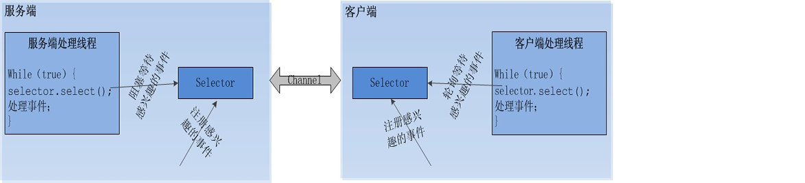

2018-2-27通信————nio,aio,bio
网络概述
Socket又称“套接字”，应用程序通常通过“套接字”向网络发出请求或应答网络请求。
Socket和ServerSocket类库位于java.net包中。ServerSocket用于服务器端，Socket是建立网络连接时使用的。在连接成功时，应用程序两端都会产生一个Socket实例，操作这个实例，完成所需的会话。对于一个网络连接来说，套接字是平等的，不会因为在服务器端或在客户端而产生不同的级别。不管是ServerSocket还是Socket，它们的工作都是通过SocketImpl类及其子类完成的。
套接字的连接过程可以分为四个步骤：服务器监听、客户端请求服务器、服务器端连接确认、客户端连接确认并进行通信。
（1）服务器监听：服务器端套接字并不定位具体的客户端套接字，而是出于等待连接的状态，实时监控网络状态。
（2）客户端请求：客户端的套接字提出连接请求，要连接的目标是服务器端的套接字。为此，客户端的套接字必须首先描述要连接的服务器端的套接字，指出服务器端的套接字的地址和端口号，然后向服务器端套接字提出连接请求。
（3）服务器端连接确认：当服务器端的套接字监听到或者说接收到客户端套接字的连接请求，它就响应客户端套接字的请求，建立一个新的线程，把服务器端套接字的描述发送给客户端。
（4）客户端连接确认：一旦客户端确认了此描述，连接就建立好了，双方开始通信。而服务器端套接字继续处于监听状态，继续接收其他客户端套接字的连接请求。
借用一下网上的Socket通信模型图片：
Socket通信步骤(BIO——Blocking I/O)：
①创建ServerSocket和Socket
②打开连接到Socket的输入/输出流
③按照协议对Socket进行读写操作
④关闭输入输出流、关闭Socket
服务器端：
①创建ServerSocket对象，绑定监听端口
②通过accept()方法监听客户端请求
③建立连接后，通过输入流读取客户端发送的请求信息
④通过输出流向客户端发送响应信息
⑤关闭相关资源
客户端：
①创建Socket对象，指明需要连接的服务器的地址和端口号
②连接建立后，通过输出流向服务器端发送请求信息
③通过输入流获取服务器响应信息
④关闭响应资源
NIO
NIO(None-Blocking I/O)同步非阻塞I/O，主要由三个核心部分组成:Channel(通道)，Buffer(缓冲区), Selector(选择器)。传统IO基于字节流和字符流进行操作，而NIO基于Channel和Buffer(缓冲区)进行操作，数据总是从通道读取到缓冲区中，或者从缓冲区写入到通道中。Selector(选择区)用于监听多个通道的事件（比如：连接打开，数据到达）。因此，单个线程可以监听多个数据通道。
NIO和传统IO之间第一个最大的区别是，IO是面向流的，NIO是面向缓冲区的。
channel
传统的IO客户端和服务器的通信主要是基于stream(流)，只不过是单向的，例如:InputStream, OutputStream。而channel是双向的，可以读也可以写。
NIO中channel有ServerSocketChannel，SocketChannel等等。
通道完成后还需要选择器进行俩者的通信。
selector
Selector运行单线程处理多个Channel，如果你的应用打开了多个通道，但每个连接的流量都很低，使用Selector就会很方便。 NIO中的关键Buffer实现有：ByteBuffer, CharBuffer, DoubleBuffer, FloatBuffer, IntBuffer, LongBuffer, ShortBuffer，分别对应基本数据类型: byte, char, double, float, int, long, short。

这个方法会一直阻塞到某个注册的通道有事件就绪。一旦这个方法返回，线程就可以处理这些事件，事件的例子有如新的连接进来、数据接收等。
每次向选择器注册通道时就会创建一个选择键(selectionKey)，注册完成后就会在另一端的select()方法之后执行对应的选择键的操作。代码如下:
Set
Iterator
it.remove();//标记当前键为已经使用
Buffer
感谢:
http://www.importnew.com/19816.html https://baijiahao.baidu.com/s?id=1573998393898438&wfr=spider&for=pc关键字词: 流